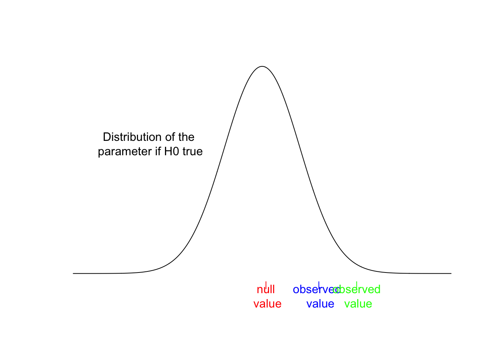
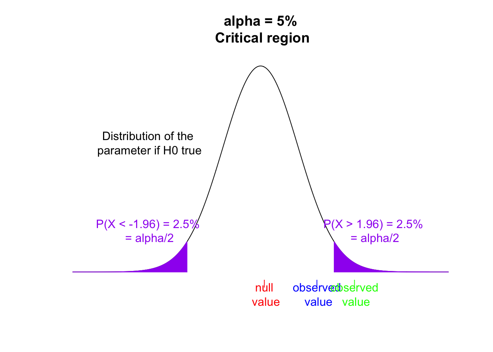
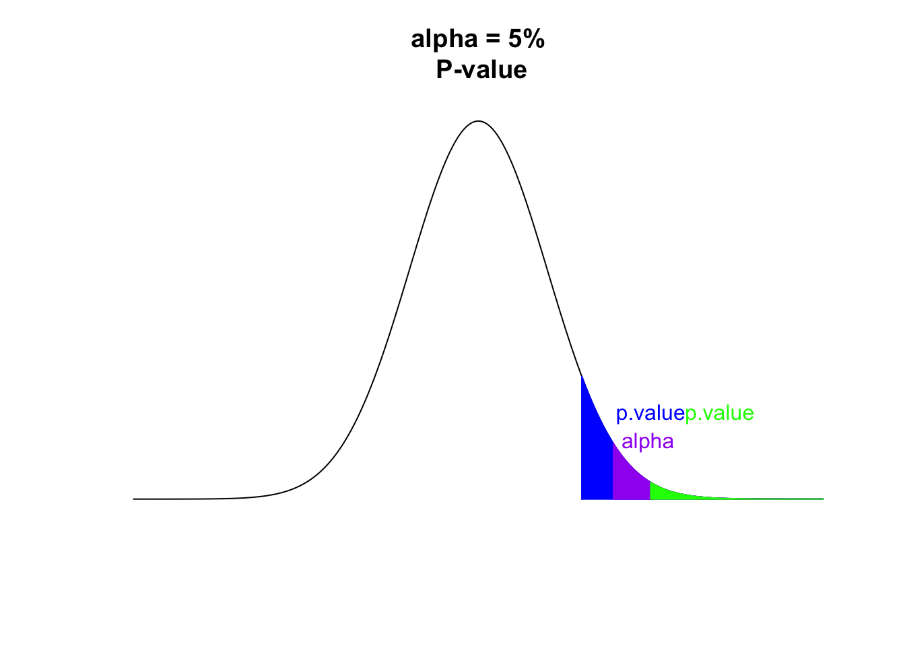

census <- read.table("data/US/UScensus2000.txt",
header = T, sep = "\t")20 Hypotheses testing
In this section we will use again the dataset UScensus2000.txt
20.1 Concepts and Definitions
20.1.1 Test
A statistical test is a method used to determine whether there is a significant difference between an expected model (or hypothesis) and the observed data. It is used to assess whether observed differences are due to random chance or if they are statistically significant, thereby allowing to compare a hypothesis against the collected data.
You are interested in a particular question for which only two answers are possible: yes or no. Each outcome is expressed as an hypothesis: a null hypothesis \(H_0\) - it often represents the hypothesis of no change - and an alternative hypothesis \(H_1\) - it often represents the hypothesis of a change.
Your sample is made of observations assumed to be random and described by a statistical model. The two possible answers to the question of interest are:
The null hypothesis is rejected: it means that the answer to the question is yes: the observed differences are significant and sufficiently large that they our hypothesis does not hold.
The null hypothesis is not rejected: it means that the answer to the question is no: the differences observed are due to randomness. With this data our hypothesis still holds.
20.1.2 Example:
You want to answer the question: Does a given drug have an impact on a particular disease?
The null hypothesis (\(H_0\)) is: The drug has no effect; the patient does not feel better or worse with the treatment.
The alternative hypothesis (\(H_1\)) is: The drug has an effect (which can be either positive or negative).
20.1.3 Uni- and Bi-lateral Tests
There are two types of tests: bilateral and unilateral.
Bilateral Test: This test checks for any difference from the null hypothesis, whether it is higher or lower. \[H_0 = \{ \theta = \theta_0 \} \text{ and } H_1 = \{ \theta \neq \theta_0 \}\]
Unilateral Test: This test checks for a difference in a specific direction, either higher or lower.
- Right-tailed test: \[H_0 = \{ \theta \leq \theta_0 \} \text{ and } H_1 = \{ \theta > \theta_0 \}\]
- Left-tailed test: \[H_0 = \{ \theta \geq \theta_0 \} \text{ and } H_1 = \{ \theta < \theta_0 \}\]
20.1.4 Types of Errors
Decision error terms help us understand the likelihood of making incorrect decisions. There are two types of errors:
| \(H_0\) true | \(H_1\) true | |
|---|---|---|
| \(H_0\) not rejected | \(1 - \alpha\) | \(\beta\) |
| \(H_0\) rejected | \(\alpha\) | \(1 - \beta\) |
In the table above, rows represent the decision made, while columns represent the actual reality.
- Type I Error (\(\alpha\)):
This is the significance level of the test. It occurs when we reject the null hypothesis (\(H_0\)) when it is actually true. This error represents the probability of incorrectly concluding that there is an effect when there is none. Common significance levels are 1%, 5%, or 10%.
- Type II Error (\(\beta\)):
This occurs when we fail to reject the null hypothesis (\(H_0\)) when the alternative hypothesis (\(H_1\)) is actually true. This error represents the probability of incorrectly concluding that there is no effect when there is one.
20.1.5 Power of a Test
The power of a test is given by \(1 - \beta\).
It represents the probability of correctly rejecting the null hypothesis (\(H_0\)) when it is false. If the power of a test tends to 1 as the sample size increases to infinity, the test is said to be consistent.
20.1.6 Critical Region: \(C_\alpha\)
To test if a point estimate \(\hat{\theta}\) is significantly different from a null value \(\theta_0\), we must consider uncertainty. We use the concept of the confidence interval (CI) introduced previously. The confidence interval is also known as the acceptance region. Any value outside this interval falls into the rejection region, which is called the critical region and can be expressed as:
\[CI_{1-\alpha} = [\theta_0 \pm z_\alpha * SE ] = [ \theta_0 - z_{\alpha/2} * SE ; \theta_0 + z_{1-\alpha/2} * SE ] \]
\[C_\alpha = [ min ; \theta_0 - z_{\alpha/2} * SE] \cup [ \theta_0 + z_{1-\alpha/2} * SE ; max ]\][^062_hypothesis_test-1]
From \(Z\) the value of the observed statistic we can decide to reject or not the null hypothesis.
- If \(Z \in C_\alpha\), we reject \(H_0\)
- If \(Z \notin C_\alpha\), we do not reject \(H_0\)
20.1.7 P-Value:
Also called the probability value, the p-value or \(p\) corresponds to the probability that a given test statistic exceeds the threshold value to fall within the rejection area when \(H_0\) is true. It helps us determine the strength of the evidence against the null hypothesis.
A low p-value (close to 0) indicates that the observed data is unlikely under the null hypothesis, suggesting that we should reject \(H_0\). Conversely, a high p-value suggests that the observed data is consistent with \(H_0\), and we do not reject it.
Decision Rule: - If \(p.value < \alpha\), we reject \(H_0\). - If \(p.value > \alpha\), we do not reject \(H_0\).
20.2 Steps in practice
Choose \(H_0\), \(H_1\), and \(\alpha\).
Define the test statistic.
Using the Critical Region
- Compute the critical region \(C_\alpha\) with respect to \(\alpha\) and \(H_0\).
- Compute the value of the test statistic from the observed sample.
or 3. Using the P-Value
- Compute the p-value from the sample.
- Conclusion: Reject or do not reject \(H_0\) at the significance level \(\alpha\).
20.3 Illustration
Suppose we have a parameter \(\theta\), observed twice: blue \(1.5\) and green \(2.5\) Suppose the population is expected to follow a standard normal distribution
plot(x, y, type='l', axes = F, xlab = '', ylab = '',
main = '')
axis(1, mean(y), 'null\n value', col = 'red', col.axis = 'red')
axis(1, obs1, 'observed \n value', col = 'blue', col.axis = 'blue')
axis(1, obs2, 'observed\n value', col = 'green', col.axis = 'green')
text(-3, .25, "Distribution of the\n parameter if H0 true")
and we want to test the hypothesis \(H_0\) that those observed values are not null, i.e. testing the null hypothesis: \(H_0: \theta = \theta_0\).
We choose a significance level \(\alpha = 5%\)
The question is then: Are the observed value \(\theta\) significantly different from the null value \(\theta_0\) at level \(\alpha = 5\%\)?
Using the critical region we observe the position of each parameter against the values representing the limits of the critical region:
We know the region is here defined based on a normal distribution of mean 0 and standard deviation 1. So for \(\alpha = 5\%\), we have \(z=-1.96\) and \(z=1.96\). Or more exactly
z <- 1.96
qnorm(p=0.05/2,mean = 0, sd=1,lower.tail = TRUE)
#> [1] -1.959964
qnorm(p=0.05/2,mean = 0, sd=1,lower.tail = FALSE)
#> [1] 1.959964plot(x, y, type='l', axes = F, xlab = '', ylab = '',
main = 'alpha = 5%\n Critical region')
axis(1, mean(y), 'null\n value', col = 'red', col.axis = 'red')
axis(1, obs1, 'observed\n value', col = 'blue', col.axis = 'blue')
axis(1, obs2, 'observed\n value', col = 'green', col.axis = 'green')
text(-3, .25, "Distribution of the\n parameter if H0 true")
polygon(c(z, x[x >= z]), c(0, y[x >= z]), col = 'purple', border = 'purple')
polygon(c(-z, x[x <= -z]), c(0, y[x <= -z]), col = 'purple', border = 'purple')
text(3, .08, "P(X > 1.96) = 2.5%\n = alpha/2", col = 'purple')
text(-3, .08, "P(X < -1.96) = 2.5%\n = alpha/2", col = 'purple')
Now we see that:
- the green case is beyond the critical region for \(\theta\). We thus reject the null hypothesis. The green \(\theta\) is not zero.
- the blue case is within the critical region for \(\theta\). We can’t reject the null hypothesis. The blue \(\theta\) could still be a zero.
Using the p-value, we compute the corresponding p-values:
p1<-1-pnorm(q = obs1,mean = 0, sd=1)
p1
#> [1] 0.0668072
p2<-1-pnorm(q = obs2,mean = 0, sd=1)
p2
#> [1] 0.006209665
#the p-value we chose can also be obtained from same function
qz<-qnorm(p = 0.05/2, mean = 0, sd = 1, lower.tail = FALSE)
qz
#> [1] 1.959964
pz<-1-pnorm(q=qz , mean = 0, sd = 1)
pz
#> [1] 0.025Where we see that - \(p.value = 0.06 > \alpha\) for the blue case, i.e. we reject \(H_0\). - \(p.value = 0.006 < \alpha\) for the green case, i.e. we don’t reject \(H_0\).
plot(x, y, type='l', axes = F, xlab = '', ylab = '',
main = 'alpha = 5%\n P-value')
polygon(c(obs1, x[x >= obs1]), c(0, y[x >= obs1]), col = 'blue', border = 'blue')
text(obs1+1, .09, "p.value", col = 'blue')
polygon(c(z, x[x >= z]), c(0, y[x >= z]), col = 'purple', border = 'purple')
text(z+.5, .06, "alpha", col = 'purple')
polygon(c(obs2, x[x >= obs2]), c(0, y[x >= obs2]), col = 'green', border = 'green')
text(obs2+1, .09, "p.value", col = 'green')
20.4 Example: Testing the Average Height
Suppose we have a sample of 30 individuals, and we want to test if their average height is significantly different from the known population mean height of 170 cm.
Here is our sample (on purpose we generate it with an expected mean of 172 and quite a large variance)
set.seed(123)
h <- rnorm(30, mean = 172, sd = 6)
summary(h)
#> Min. 1st Qu. Median Mean 3rd Qu. Max.
#> 160.2 168.0 171.6 171.7 174.9 182.7
mean(h)
#> [1] 171.7174We know the population mean and consider a significance level of \(0.05\)
barH <- 170
alpha <- 0.05We would like to know if the sample mean is close to the population mean, but we have a small number of records and the variance of the population is not know, so we can’t relate to a known normal distribution but must consider a t-student distribution.
Our t-statistic compares the sample mean to the population mean divided by the standard error:
t_statistic <- (mean(h) - barH) / (sd(h) / sqrt(length(h)))
t_statistic
#> [1] 1.598058We must compare this t-statistic to the value from a two-tailed t-test critical value (our mean could be below or above the mean) with 29 degrees of freedom:
df <- length(h) - 1
t_critical <- qt(1 - alpha / 2, df)
t_critical
#> [1] 2.04523Using the critical region, we can check if the parameter is beyond the limits or not:
abs(t_statistic) > t_critical
#> [1] FALSE, which in this case is false hence the sample mean is within the acceptable range to correspond to the population mean. We can’t reject the null hypothesis.
We can also compute the p-value:
p_value <- 2 * (1 - pt(abs(t_statistic), df))
p_value
#> [1] 0.1208704, which is above \(\alpha\). Hence we can’t reject the null hypothesis. The sample mean is not different form the population mean.